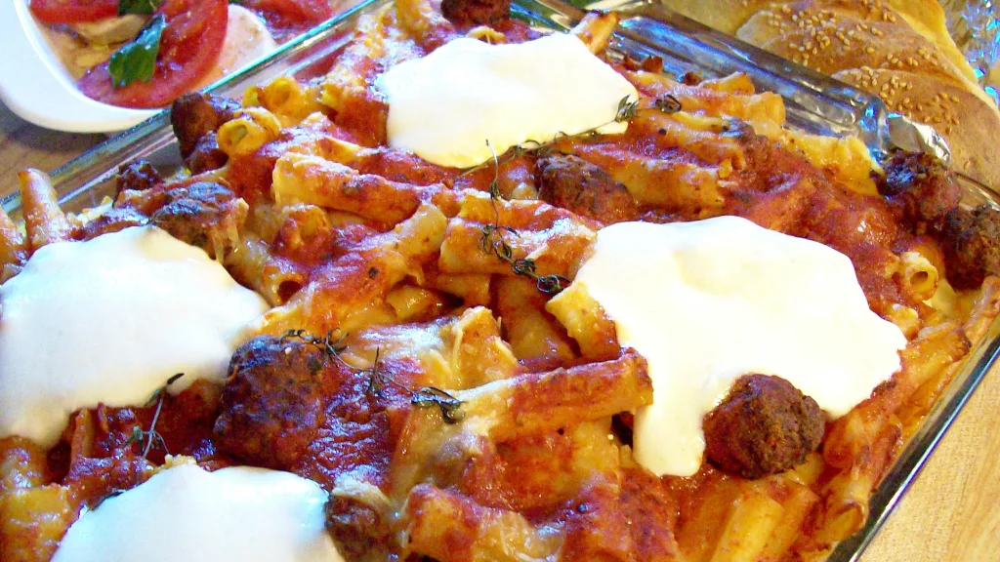

Eggplan Parm

Description
"Is there a commandment against eating ziti?"
Ingredients
- 1 lb ziti pasta, cooked
- salt
- pasta sauce
- meatballs
- 1 cup freshly grated romano cheese
- 1 cup ricotta cheese
- 8 ounces mozzarella cheese
- grated cheese, to sprinkle on top
Steps
- Put all the ziti in a large bowl.
- Toss ziti with 3 cups of the gravy and half of the grated cheese.
- Spoon half of the ziti into a casserole dish.
- Spread the ricotta over the top of the ziti.
- Sprinkle with the mozzarella and rest of grated cheese.
- Pour on 1 cup of sauce.
- Top with remaining ziti and rest of sauce (it will be almost overflowing) sprinkle with more grated cheese.
- Bake covered with foil for 45 minutes and then uncovered for 15 minutes.
- Let stand 15 minutes.